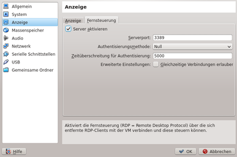

Windows mit VirtualBox
Dieser Artikel wurde für die folgenden Ubuntu-Versionen getestet:
Dieser Artikel ist mit keiner aktuell unterstützten Ubuntu-Version getestet! Bitte diesen Artikel testen und das getestet-Tag entsprechend anpassen.
Zum Verständnis dieses Artikels sind folgende Seiten hilfreich:
 Dieser Artikel dient als Ergänzung zum Hauptartikel LTSP. Mit LTSP lässt sich schnell ein Server aufsetzen, von dem andere Rechner booten und dessen Rechenleistung nutzen. Normalerweise stehen den Clients die Oberflächen und Programme zur Verfügung, die auf dem Server installiert sind.
Dieser Artikel dient als Ergänzung zum Hauptartikel LTSP. Mit LTSP lässt sich schnell ein Server aufsetzen, von dem andere Rechner booten und dessen Rechenleistung nutzen. Normalerweise stehen den Clients die Oberflächen und Programme zur Verfügung, die auf dem Server installiert sind.
Manche Nutzer lassen sich aber aus verschiedenen Gründen überhaupt nicht von der Nutzung von Linux bzw. Ubuntu überzeugen. Die Kombination aus LTSP und VirtualBox kann dann dazu verwendet werden, um die Clients nach dem Booten direkt über einen RDP-Client mit einem auf dem Server laufenden virtuellen Betriebssystem (z.B. Windows) zu verbinden.
Installation¶
ltsp-server (für Einsatz im bestehenden Netzwerk)
dnsmasq (universe, gleiches wie oben)
virtualbox-ose (universe)
virtualbox-ose-qt (universe)
 mit apturl
mit apturl
Paketliste zum Kopieren:
sudo apt-get install ltsp-server dnsmasq virtualbox-ose virtualbox-ose-qt
sudo aptitude install ltsp-server dnsmasq virtualbox-ose virtualbox-ose-qt
LTSP kann direkt aus den Quellen installiert werden [1]. Die Installation und Einrichtung ist im Artikel Installation_ab 11.04 beschrieben. Der Installation und Einrichtung in einer bestehenden Netzwerkstruktur widmet sich der Artikel LTSP im Heimnetzwerk.
Bei VirtualBox ist die Installation der Open Source Edition aus den Paketquellen nicht ausreichend. Man muss auch das proprietäre Extension-Pack installieren, um den integrierten RDP-Server nutzen zu können.
RDP-Server starten¶

Zuerst wird Virtualbox so konfiguriert, dass via RDP ein Zugriff auf laufende virtuelle Maschinen möglich ist. Dazu geht man mit Rechtsklick und "Ändern..." oder STRG+S in die Einstellungen der virtuellen Maschine und aktiviert unter "Anzeige" - "Fernsteuerung" den RDP-Server. Wenn mehrere Maschinen gleichzeitig laufen sollen, muss der Port so geändert werden, dass jede Maschinen einen eigenen Port hat.
Wenn das klappt, kann man probeweise mal diese virtuelle Maschine starten. Mit einer Fernwartungssoftware, die das RDP-Protokoll unterstützt, sollte dann eine Verbindung zu localhost möglich sein. Im Artikel VNC werden einige Clients genannt, die das können.
LTSP konfigurieren¶
Die Konfiguration der Clients geschieht über die lts.conf, die unter /var/lib/tftpboot/ltsp/i386/ bzw. /var/lib/tftpboot/ltsp/amd64/ zu finden ist. Man kann den Eintrag für die Verbindung zu einem RDP-Server unter den Abschnitt "Default" schreiben. Dann bauen alle Clients nach den starten eine RDP-Verbindung auf, sofern es keine spezifischen Einstellungen gibt.
[default] #IP-Adresse des Servers einsetzen. SCREEN_07 = xfreerdp #IP-Adresse des Servers einsetzen. RDP_SERVER = 192.168.1.1 # -x l bedeutet, dass für die Verbindung LAN-Geschwindigkeit zur Verfügung steht, -f für Fullscreen RDP_OPTIONS = "-x l -f"
Weitere Optionen für xfreerdp finden sich in der Manpage. Wenn nicht alle Clients eine RDP-Verbindung aufbauen sollen, kommt die Konfiguration in einen Client-spezifischen Sektor unter der MAC-Adresse in der Datei lts.conf.
# MAC-Adresse des Clients [02:ca:ff:ee:ba:be] SCREEN_07 = xfreerdp RDP_SERVER = 192.168.1.1 RDP_OPTIONS = "-x l -f"
Weitergehende Konfigurationsmöglichkeiten sind im Artikel LTSP/lts.conf beschrieben.
Sound¶
Damit die RDP-Clients auch Sound haben, wird die Zeile "RDP-Options erweitert".
RDP_OPTIONS = "-x l -f --plugin rdpsnd"
Achtung!
Der Bugtracker von Virtualbox weist einen ungefixten Bug  auf, wonach das von LTSP verwendete
auf, wonach das von LTSP verwendete xfreerdp in Verbindung mit dem RDP-Server von Virtualbox nicht oder nur sehr sporadisch den Sound überträgt.
USB-Speichergeräte¶
Es lassen sich lokale Datenspeicher in Form einer Samba-Freigabe an die Clients übergeben. Dazu wird die Zeile "RDP-Options erweitert".
RDP_OPTIONS = "-x l -f --plugin rdpdr --data disk:Speicher:/media/ -- "
Der Client hat dann eine Freigabe mit dem Namen "Speicher", in der angeschlossene Speichermedien auftauchen.
Problembehebung¶
Bildschirmauflösung der Clients zu gering¶
Es kann sein, dass die maximale Bildschirmauflösung für RDP-Clients bei nur 800x600 liegt und keine höhere Einstellung möglich ist. Über die Kommandozeile kann man weitere Auflösungen zu einer virtuellen Maschine hinzufügen. Am besten wählt man hier die höchstmögliche Bildschirmauflösung des später verwendeten Clients.
# Beispiel für ein 10"-Netbook als Client. VBoxManage setextradata "VM Name" "CustomVideoMode1" "1024x600x16"
Links¶
Configuring the maximum resolution of guests when using the graphical frontend
- Bildschirmauflösung für virtuelle Maschinen in VirtualboxUse FreeRDP instead of rdesktop
- Fehlerbericht Soundprobleme mit Virtualbox und FreeRDPLTSP
 Übersichtsartikel
Übersichtsartikel
- Erstellt mit Inyoka
-
 2004 – 2017 ubuntuusers.de • Einige Rechte vorbehalten
2004 – 2017 ubuntuusers.de • Einige Rechte vorbehalten
Lizenz • Kontakt • Datenschutz • Impressum • Serverstatus -
Serverhousing gespendet von